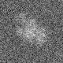
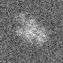

最小
最大
平均値
標準偏差
標準誤差
-65.0178
94.4699
4.85274
20.4635
0.255794
| オプション | 必須項目/選択項目 | NULL | デフォルト |
|---|---|---|---|
| -i | 必須 | 入力ファイル設定 | NULL |
| -r | 必須 | 参照ファイル設定 | NULL |
| -o | 必須 | 出力ファイル設定 | NULL |
| -O | 選択 | 出力ファイル設定 | stdout |
| -D | 選択 | stdout | |
| -Cylinder | 選択 | CCenterX=20 CCenterY=20 CMinR=10 CMaxR=20 | |
| -testBG | 選択 | tstBGMin=-3 tstBGMax=3 tstBGDelta=0.1 | |
| -M | 選択 | モード１ | 0 |
| -m | 選択 | モード２ | 0 |
| -h | 選択 | ヘルプを表示 |
| モード | 説明 |
|---|---|
| 0 | 密度フィッティング法：単線 |
| 1 | 密度フィッティング法： |
| モード | 説明 |
|---|---|
| 1 | |
| 2 | |
| 4 | |
| 8 |
|
最小 |
-65.0178 |
|  | 最小 |
-37.8047 |
 |
最小 |
-32.2771 |
|  | 最小 |
-31.6534 |
|
最小 |
-32.2771 |
 |
最小 |
-31.946 |